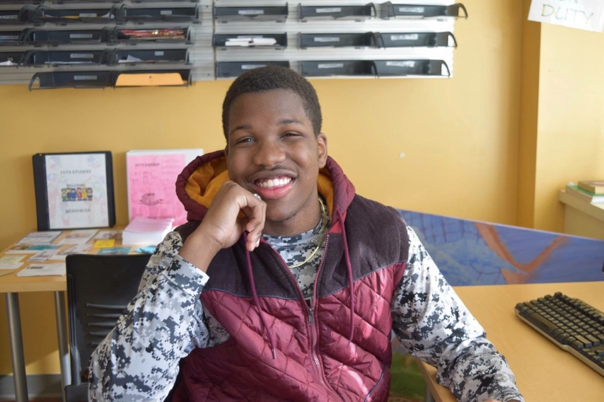

About Us
Militech was created to fill a niche market of those interested in the newest military technologies. Militech has inside sources to the newest and most impressive technologies of today. Militech focuses on engaging innovations, without compromising the integrity of the story. Militech publishes articles weekly, continuing to be on the cutting edge of development. Our personnel work directly with the military and other organizations to continue to be ahead of our competition.
READ MOREKyle Munly

Kyle is a 22 year old senior and pursuing a bachelor's degree in Mechanical Engineering. He loves to ride his motocross bike and downhill mountain bike in his free time and enjoys playing video games to relax. He loves the outdoors and would prefer to stay in Washington State once he graduates, but he’s willing to go anywhere where there’s opportunity. He hopes to put his degree to good use and earn a position that utilizes his skills to their fullest potential.
Maxwell Mielke

Max Mielke is a senior studying Agricultural Economics at Washington State University. Max will graduate in December 2017 and plans to continue his career in agriculture. Max has had previous experience writing for agricultural organizations and working for farms and cattle ranches. Max plans to continue his career by being involved in production agriculture. In Max’s spare time he enjoys taking walks, hiking, jeeping, and riding horses. Feel free to contact Max at maxtheeditor@militech.com
Nathan Nemiroff
Nathan Nemiroff is a up and coming professional computer scientist, currently studying at WSU as a senior, though has plenty of experience writing software outside of class, and enjoys coming up with new ideas to bring to life. His fascination with weapons technology and love for reasearch and fact checking makes him a valubale editor and maintenance chief. He hopes one day to branch out and create his own website company and provide unique experiences every day.
Julian Jacox
Julian Jacox major is complicated, which entails 3 minors (sports management, communications, and human development) which makes into one major. Julian’s goals are to finish his degree and lead into many paths of his life. Julian would like to go into his career, but desires to stay involved somehow in sports at this point in his life. It might change down the road, but who knows. Julian likes to play basketball and football during his spare time. Julian used to like running track until too many injuries stopped him from continuing to compete. Everything in life is fun for Julian, even school which is surprising to most people.